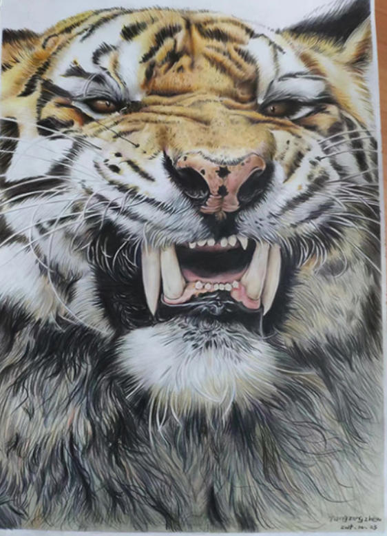
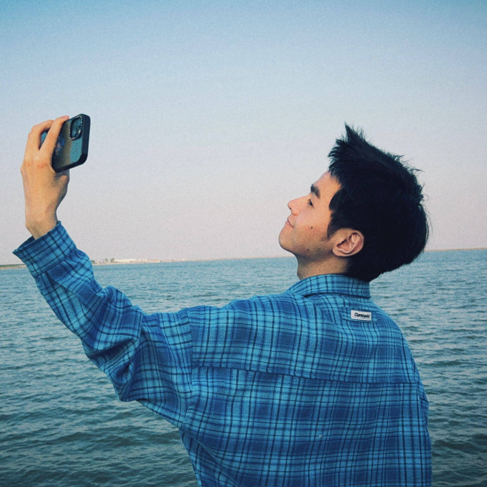
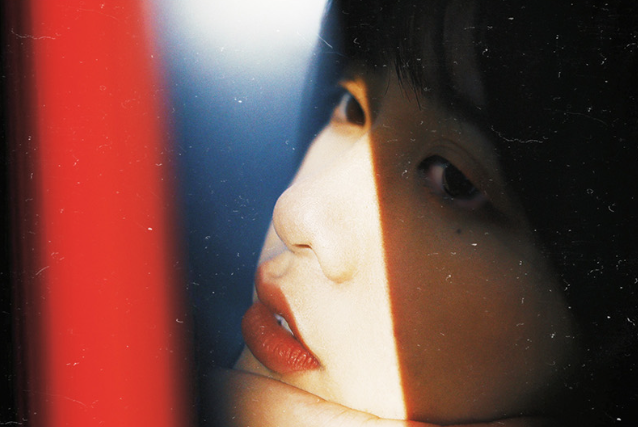

设计实践 / 项目经验
基于 LLM 驱动的代码生成与前端工程化，利用 AI Agent 完成从设计规范到交互实现的全链路开发。涵盖自定义光标系统、3D CSS 视差魔方、GSAP 滚动动画编排、以及内嵌 AI 对话助手等模块，体现人机协同的高效创作范式。
独立完成中英双语文字排版与图文设计，并主要负责了英国方项目视频的剪辑与视觉制作，展现跨媒介内容交付能力。
1. 参与编撰《AI技术赋能居家养老服务实践》，独立撰写第四/九章。
2. 全网矩阵累计 2W+ 粉丝，含个人成长 IP 及研究生工作室账号（设计文献带读）。
担任前期调研及概念发散、产品物理界面与移动端 App 的交互设计、产品渲染与视觉可视化等核心工作。
基于老龄化社区的设计项目。担任 PSS 分析、移动端 App 全链路交互设计与 UI 规范制定、2.5D 流线图制作等核心工作。
光量子技能图谱 // 技术武器库
作品集分类档案
硕士阶段核心实践 (2022-2025)
情感计算 // 流体视觉重构
汉斯格雅 // 康养卫浴设计
生成式设计 // 数字化工作流
本科阶段优选作品 (2018-2022)
无障碍就医 // PSS服务系统
尊严的具现 // 优秀毕设
设计外的我 // 手绘、生活与摄影

灵感原点的纸笔记录，通过细腻的彩色铅笔刻画，探索自然形态下的张力与细节美学。

设计源于生活，从日常体验与自然风光中提取系统的温度，平衡数字理性与真实感知。

在每一次快门中捕捉人物的真实情感、戏剧性光影与胶片颗粒质感。